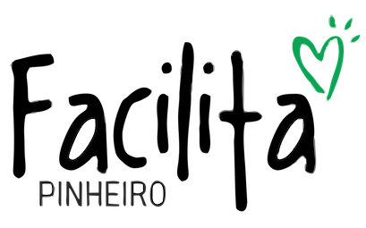

O Facilita PINHEIRO nasce do desejo de estender a mão aos moradores do bairro Pinheiro, situado em Maceió-AL. A região sofre com um fenômeno de rachaduras e tremores de terra. O IFPP - Instituto para o Fomento de Políticas Públicas se solidariza e lança 5 ATOS para amenizar a lacuna entre a gestão pública e os moradores.
A Oikos e Serraria Falcão se unem em solidariedade para promover a mudança solidária para moradores do Pinheiro na área de risco. O ato disponibiliza caminhão e motorista, não se responsabilizando pelo carregamento e descarregamento da mobília. CLIQUE AQUI e preencha o cadastro abaixo que em breve entraremos em contato.
A ideia é contar um pouco dessas histórias de vidas no bairro, por meio de fotografias antigas dos moradores. A ação tem como um dos objetivos principais humanizar o processo nebuloso e ainda incerto que o lugar vem passando, além de buscar sensibilizar a população de Maceió para o problema, que não pode ser encarado como exclusivo do bairro, mas da cidade de modo geral. É só o começo... Vamos levar a exposição - com todos esses personagens da vida real do Pinheiro e outros que aparecerem - também aos shopping, universidades, empresas e à orla. Acompanhe a agenda no Instagram do IFPP - Instituto para o Fomento de Polític
Desvendar os fatos e boatos que giram em torno do fenômeno que assola o bairro Pinheiro. Com informação e linguagem acessível, evitando o terrorismo psicológico que assola os moradores na atualidade.
Tradução dos relatórios e diagnósticos técnicos em uma linguagem mai acessível para os moradores. Utilizando de infográficos e imagens produzidas para melhor explicação dos problemas, soluções e processos.
Profissionais voluntários que queiram prestar serviços gratuitos aos moradores das áreas de risco.